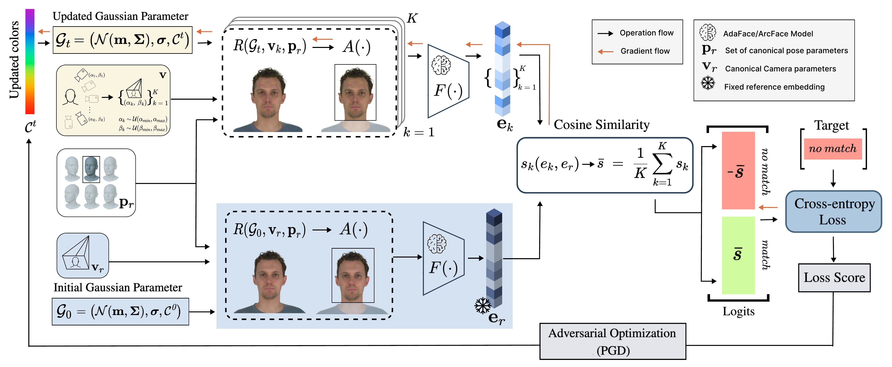

The growing adoption of photorealistic 3D facial avatars, particularly those utilizing efficient 3D Gaussian Splatting representations, introduces new risks of online identity theft, especially in systems that rely on biometric authentication. While effective adversarial masking methods have been developed for 2D images, a significant gap remains in achieving robust, viewpoint-consistent identity protection for dynamic 3D avatars. To address this, we present AEGIS, the first privacy-preserving identity masking framework for 3D Gaussian avatars, concealing identity from automated face recognition while preserving the avatar's perceptual realism and animation usability. AEGIS applies adversarial perturbations to the base (DC) color coefficients of the Gaussian primitives, guided by an ensemble of pre-trained face verification networks, embedding the protection directly in the 3D representation so that it applies across viewpoints and animations, without retraining or modifying the avatar's geometry. Evaluated against black-box recognizers, AEGIS reduces face retrieval and verification accuracy to near-zero while maintaining high perceptual fidelity. It also preserves key facial attributes such as age, gender, and emotion, demonstrating strong privacy protection with minimal visual distortion. We further introduce a viewpoint-robust leakage metric that quantifies residual identity leakage across an avatar's rendered viewpoints, which single-view evaluation cannot capture.
The process adversarially optimizes the DC color coefficients \( \mathcal{C}^t \) of a 3D Gaussian avatar to suppress its identity under an ensemble of face recognizers \( F(\cdot) \). A reference embedding \( \mathbf{e}_r \) is computed once from the original avatar \( \mathcal{G}_0 \) at the canonical camera \( \mathbf{v}_r \) and pose \( \mathbf{p}_r \). Each PGD step samples camera parameters \( \{ \mathbf{v}_k \}_{k=1}^K \) to cover diverse viewpoints, renders the current avatar \( \mathcal{G}_t \) using \( R(\cdot) \), aligns the crops with \( A(\cdot) \), and extracts embeddings \( \{\mathbf{e}_k\} \) whose mean cosine similarity \( \bar{s} \) to \( \mathbf{e}_r \), averaged over the sampled viewpoints and the ensemble, defines the match / no-match logits ( \( \bar{s} \) and \( -\bar{s} \)). A cross-entropy loss targeting "no match" is backpropagated to update \( \mathcal{C}^t \), yielding the masked avatar.

Example: verification results for one subject's avatar protected using AEGIS, optimized against an ensemble of face verification networks and shown across various rotation angles and pose variations